Code
import torch
import torch.nn as nn
from torchdiffeq import odeint as odeint
import pylab as plt
from torch.utils.data import Dataset, DataLoader
from typing import Callable, List, Tuple, Union, Optional
from pathlib import Path 
How to use differential equations layers in pytorch
Differential equations are the mathematical foundation for most of modern science. They describe the state of a system using an equation for the rate of change (differential). It is remarkable how many systems can be well described by equations of this form. For example, the physical laws describing motion, electromagnetism and quantum mechanics all take this form. More broadly, differential equations describe chemical reaction rates through the law of mass action, neuronal firing and disease spread through the SIR model.
The deep learning revolution has brought with it a new set of tools for performing large scale optimizations over enormous datasets. In this post, we will see how you can use these tools to fit the parameters of a custom differential equation layer in pytorch.

Let’s say we have some time series data y(t) that we want to model with a differential equation. The data takes the form of a set of observations yᵢ at times tᵢ. Based on some domain knowledge of the underlying system we can write down a differential equation to approximate the system.
In the most general form this takes the form:
\begin{align} \frac{dy}{dt} = f(y,t;\theta) \\ y(t_0) = y_0 \end{align}
where y is the state of the system, t is time, and \theta are the parameters of the model. In this post we will assume that the parameters \theta are unknown and we want to learn them from the data.
Let’s import the libraries we will need for this post. The only non standard machine learning library we will use the torchdiffeq library to solve the differential equations. This library implements numerical differential equation solvers in pytorch.
import torch
import torch.nn as nn
from torchdiffeq import odeint as odeint
import pylab as plt
from torch.utils.data import Dataset, DataLoader
from typing import Callable, List, Tuple, Union, Optional
from pathlib import Path if torch.cuda.is_available():
device = torch.device('cuda')
else:
device = torch.device('cpu')The first step of our modeling process is to define the model. For differential equations this means we must choose a form for the function f(y,t;\theta) and a way to represent the parameters \theta. We also need to do this in a way that is compatible with pytorch.
This means we need to encode our function as a torch.nn.Module class. As you will see this is pretty easy and only requires defining two methods. Lets get started with the first of out three example models.
We can define a differential equation system using the torch.nn.Module class where the parameters are created using the torch.nn.Parameter declaration. This lets pytorch know that we want to accumulate gradients for those parameters. We can also include fixed parameters (don’t want to fit these) by just not wrapping them with this declaration.
The first example we will use is the classic VDP oscillator which is a nonlinear oscillator with a single parameter \mu. The differential equations for this system are:
\begin{align} \frac{dX}{dt} &= \mu(x-\frac{1}{3}x^3-y) \\ \frac{dY}{dt} &= \frac{x}{\mu} \\ \end{align}
where X and Y are the state variables. The VDP model is used to model everything from electronic circuits to cardiac arrhythmias and circadian rhythms. We can define this system in pytorch as follows:
class VDP(nn.Module):
"""
Define the Van der Pol oscillator as a PyTorch module.
"""
def __init__(self,
mu: float, # Stiffness parameter of the VDP oscillator
):
super().__init__()
self.mu = torch.nn.Parameter(torch.tensor(mu)) # make mu a learnable parameter
def forward(self,
t: float, # time index
state: torch.TensorType, # state of the system first dimension is the batch size
) -> torch.Tensor: # return the derivative of the state
"""
Define the right hand side of the VDP oscillator.
"""
x = state[..., 0] # first dimension is the batch size
y = state[..., 1]
dX = self.mu*(x-1/3*x**3 - y)
dY = 1/self.mu*x
# trick to make sure our return value has the same shape as the input
dfunc = torch.zeros_like(state)
dfunc[..., 0] = dX
dfunc[..., 1] = dY
return dfunc
def __repr__(self):
"""Print the parameters of the model."""
return f" mu: {self.mu.item()}"You only need to define the dunder init method (init) and the forward method. I added a string method repr to pretty print the parameter. The key point here is how we can translate from the differential equation to torch code in the forward method. This method needs to define the right-hand side of the differential equation.
Let’s see how we can integrate this model using the odeint method from torchdiffeq:
vdp_model = VDP(mu=0.5)
# Create a time vector, this is the time axis of the ODE
ts = torch.linspace(0,30.0,1000)
# Create a batch of initial conditions
batch_size = 30
# Creates some random initial conditions
initial_conditions = torch.tensor([0.01, 0.01]) + 0.2*torch.randn((batch_size,2))
# Solve the ODE, odeint comes from torchdiffeq
sol = odeint(vdp_model, initial_conditions, ts, method='dopri5').detach().numpy()plt.plot(ts, sol[:,:,0], lw=0.5);
plt.title("Time series of the VDP oscillator");
plt.xlabel("time");
plt.ylabel("x");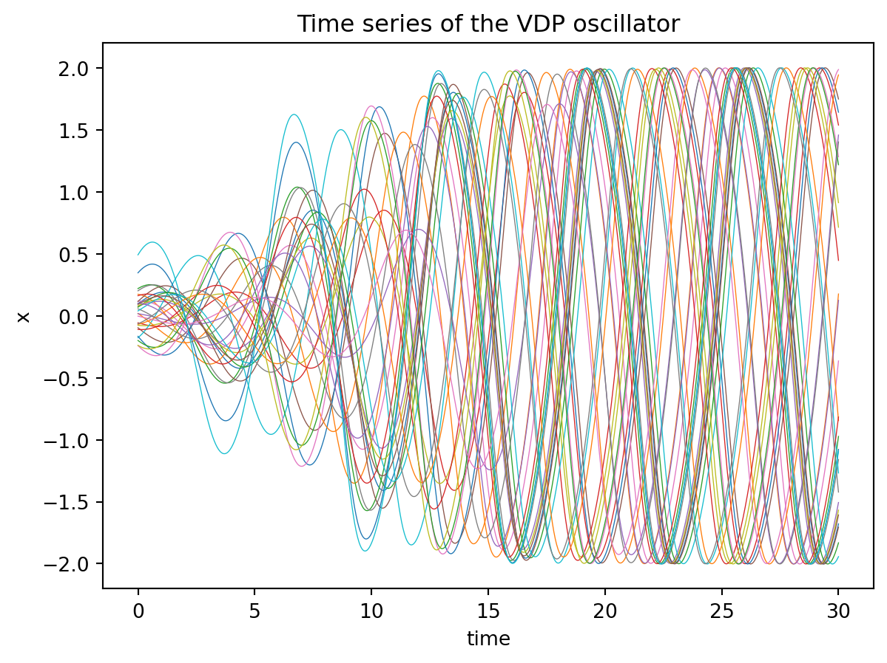
Here is a phase plane plot of the solution (a phase plane plot of a parametric plot of the dynamical state).
# Check the solution
plt.plot(sol[:,:,0], sol[:,:,1], lw=0.5);
plt.title("Phase plot of the VDP oscillator");
plt.xlabel("x");
plt.ylabel("y");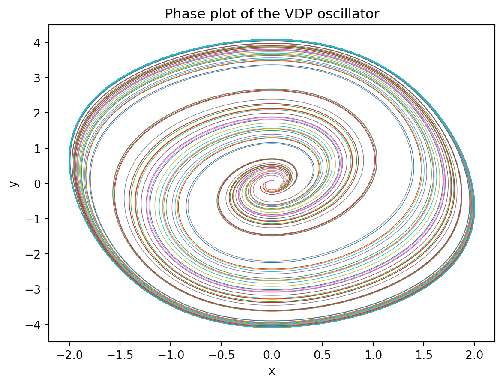
The colors indicate the 30 seperate trajectories in our batch. The solution comes back as a torch tensor with dimensions (time_points, batch number, dynamical_dimension).
sol.shape(1000, 30, 2)As another example we create a module for the Lotka Volterra predator-prey equations. In the Lotka-Volterra (LV) predator-prey model, there are two primary variables: the population of prey (x) and the population of predators (y). The model is defined by the following equations:
\begin{align} \frac{dx}{dt} &= \alpha x - \beta xy \\ \frac{dy}{dt} &= -\delta y + \gamma xy \\ \end{align}
The population of prey (x) represents the number of individuals of the prey species present in the ecosystem at any given time. The population of predators (y) represents the number of individuals of the predator species present in the ecosystem at any given time.
In addition to the primary variables, there are also four parameters that are used to describe various ecological factors in the model:
\alpha represents the intrinsic growth rate of the prey population in the absence of predators. \beta represents the predation rate of the predators on the prey. \gamma represents the death rate of the predator population in the absence of prey. \delta represents the efficiency with which the predators convert the consumed prey into new predator biomass.
Together, these variables and parameters describe the dynamics of predator-prey interactions in an ecosystem and are used to mathematically model the changes in the populations of prey and predators over time.
class LotkaVolterra(nn.Module):
"""
The Lotka-Volterra equations are a pair of first-order, non-linear, differential equations
describing the dynamics of two species interacting in a predator-prey relationship.
"""
def __init__(self,
alpha: float = 1.5, # The alpha parameter of the Lotka-Volterra system
beta: float = 1.0, # The beta parameter of the Lotka-Volterra system
delta: float = 3.0, # The delta parameter of the Lotka-Volterra system
gamma: float = 1.0 # The gamma parameter of the Lotka-Volterra system
) -> None:
super().__init__()
self.model_params = torch.nn.Parameter(torch.tensor([alpha, beta, delta, gamma]))
def forward(self, t, state):
x = state[...,0] #variables are part of vector array u
y = state[...,1]
sol = torch.zeros_like(state)
#coefficients are part of tensor model_params
alpha, beta, delta, gamma = self.model_params
sol[...,0] = alpha*x - beta*x*y
sol[...,1] = -delta*y + gamma*x*y
return sol
def __repr__(self):
return f" alpha: {self.model_params[0].item()}, \
beta: {self.model_params[1].item()}, \
delta: {self.model_params[2].item()}, \
gamma: {self.model_params[3].item()}"This follows the same pattern as the first example, the main difference is that we now have four parameters and store them as a model_params tensor. Here is the integration and plotting code for the predator-prey equations.
lv_model = LotkaVolterra() #use default parameters
ts = torch.linspace(0,30.0,1000)
batch_size = 30
# Create a batch of initial conditions (batch_dim, state_dim) as small perturbations around one value
initial_conditions = torch.tensor([[3,3]]) + 0.50*torch.randn((batch_size,2))
sol = odeint(lv_model, initial_conditions, ts, method='dopri5').detach().numpy()
# Check the solution
plt.plot(ts, sol[:,:,0], lw=0.5);
plt.title("Time series of the Lotka-Volterra system");
plt.xlabel("time");
plt.ylabel("x");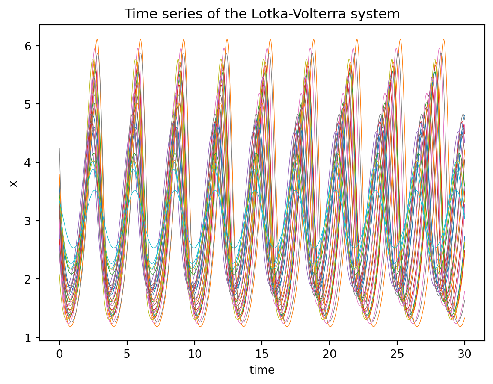
Now a phase plane plot of the system:
plt.plot(sol[:,:,0], sol[:,:,1], lw=0.5);
plt.title("Phase plot of the Lotka-Volterra system");
plt.xlabel("x");
plt.ylabel("y");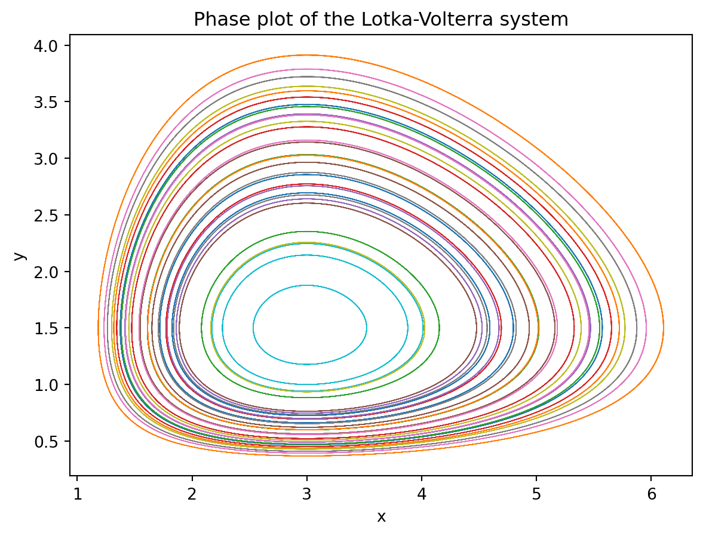
The last example we will use is the Lorenz equations which are famous for their beatiful plots illustrating chaotic dynamics. They originally came from a reduced model for fluid dynamics and take the form:
\begin{align} \frac{dx}{dt} &= \sigma(y - x) \\ \frac{dy}{dt} &= x(\rho - z) - y \\ \frac{dz}{dt} &= xy - \beta z \end{align}
where x, y, and z are the state variables, and \sigma, \rho, and \beta are the system parameters.
class Lorenz(nn.Module):
"""
Define the Lorenz system as a PyTorch module.
"""
def __init__(self,
sigma: float =10.0, # The sigma parameter of the Lorenz system
rho: float=28.0, # The rho parameter of the Lorenz system
beta: float=8.0/3, # The beta parameter of the Lorenz system
):
super().__init__()
self.model_params = torch.nn.Parameter(torch.tensor([sigma, rho, beta]))
def forward(self, t, state):
x = state[...,0] #variables are part of vector array u
y = state[...,1]
z = state[...,2]
sol = torch.zeros_like(state)
sigma, rho, beta = self.model_params #coefficients are part of vector array p
sol[...,0] = sigma*(y-x)
sol[...,1] = x*(rho-z) - y
sol[...,2] = x*y - beta*z
return sol
def __repr__(self):
return f" sigma: {self.model_params[0].item()}, \
rho: {self.model_params[1].item()}, \
beta: {self.model_params[2].item()}"This shows how to integrate this system and plot the results. This system (at these parameter values) shows chaotic dynamics so initial conditions that start off close together diverge from one another exponentially.
lorenz_model = Lorenz()
ts = torch.linspace(0,50.0,3000)
batch_size = 30
# Create a batch of initial conditions (batch_dim, state_dim) as small perturbations around one value
initial_conditions = torch.tensor([[1.0,0.0,0.0]]) + 0.10*torch.randn((batch_size,3))
sol = odeint(lorenz_model, initial_conditions, ts, method='dopri5').detach().numpy()
# Check the solution
plt.plot(ts[:2000], sol[:2000,:,0], lw=0.5);
plt.title("Time series of the Lorenz system");
plt.xlabel("time");
plt.ylabel("x");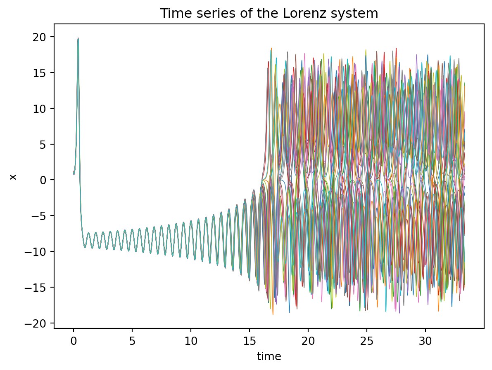
Here we show the famous butterfly plot (phase plane plot) for the first set of initial conditions in the batch.
plt.plot(sol[:,0,0], sol[:,0,1], color='black', lw=0.5);
plt.title("Phase plot of the Lorenz system");
plt.xlabel("x");
plt.ylabel("y");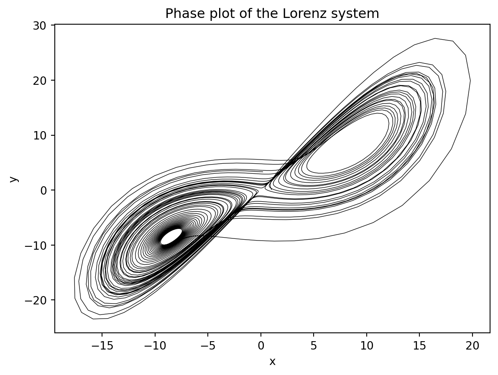
Now that we can define the differential equation models in pytorch we need to create some data to be used in training. This is where things start to get really neat as we see our first glimpse of being able to hijack deep learning machinery for fitting the parameters. Really we could just use tensor of data directly, but this is a nice way to organize the data. It will also be useful if you have some experimental data that you want to use.
Torch provides the Dataset class for loading in data. To use it you just need to create a subclass and define two methods. The __len__ function that returns the number of data points and a __getitem__ function that returns the data point at a given index. If you are wondering these methods are what underly the len(array) and ’array[0]` subscript access in python lists.
The rest of boilerplate code needed in defined in the parent class torch.utils.data.Dataset. We will see the power of these method when we go to define a training loop.
class SimODEData(Dataset):
"""
A very simple dataset class for simulating ODEs
"""
def __init__(self,
ts: List[torch.Tensor], # List of time points as tensors
values: List[torch.Tensor], # List of dynamical state values (tensor) at each time point
true_model: Union[torch.nn.Module,None] = None,
) -> None:
self.ts = ts
self.values = values
self.true_model = true_model
def __len__(self) -> int:
return len(self.ts)
def __getitem__(self, index: int) -> Tuple[torch.Tensor, torch.Tensor]:
return self.ts[index], self.values[index]Next let’s create a quick generator function to generate some simulated data to test the algorithms on. In a real use case the data would be loaded from a file or database, but for this example we will just generate some data. In fact, I recommend that you always start with generated data to make sure your code is working before you try to load real data.
def create_sim_dataset(model: nn.Module, # model to simulate from
ts: torch.Tensor, # Time points to simulate for
num_samples: int = 10, # Number of samples to generate
sigma_noise: float = 0.1, # Noise level to add to the data
initial_conditions_default: torch.Tensor = torch.tensor([0.0, 0.0]), # Default initial conditions
sigma_initial_conditions: float = 0.1, # Noise level to add to the initial conditions
) -> SimODEData:
ts_list = []
states_list = []
dim = initial_conditions_default.shape[0]
for i in range(num_samples):
x0 = sigma_initial_conditions * torch.randn((1,dim)).detach() + initial_conditions_default
ys = odeint(model, x0, ts).squeeze(1).detach()
ys += sigma_noise*torch.randn_like(ys)
ys[0,:] = x0 # Set the first value to the initial condition
ts_list.append(ts)
states_list.append(ys)
return SimODEData(ts_list, states_list, true_model=model)This just takes in a differential equation model with some initial states and generates some time-series data from it (and adds in some gaussian noise). This data is then passed into our custom dataset container. Let’s define a couple of functions to visualize the model fits.
def plot_time_series(true_model: torch.nn.Module, # true underlying model for the simulated data
fit_model: torch.nn.Module, # model fit to the data
data: SimODEData, # data set to plot (scatter)
time_range: tuple = (0.0, 30.0), # range of times to simulate the models for
ax: plt.Axes = None,
dyn_var_idx: int = 0,
title: str = "Model fits",
*args,
**kwargs) -> Tuple[plt.Figure, plt.Axes]:
"""
Plot the true model and fit model on the same axes.
"""
if ax is None:
fig, ax = plt.subplots()
else:
fig = ax.get_figure()
vdp_model = VDP(mu = 0.10)
ts = torch.linspace(time_range[0], time_range[1], 1000)
ts_data, y_data = data
initial_conditions = y_data[0, :].unsqueeze(0)
sol_pred = odeint(fit_model, initial_conditions, ts, method='dopri5').detach().numpy()
sol_true = odeint(true_model, initial_conditions, ts, method='dopri5').detach().numpy()
ax.plot(ts, sol_pred[:,:,dyn_var_idx], color='skyblue', lw=2.0, label='Predicted', **kwargs);
ax.scatter(ts_data.detach(), y_data[:,dyn_var_idx].detach(), color='black', s=30, label='Data', **kwargs);
ax.plot(ts, sol_true[:,:,dyn_var_idx], color='black', ls='--', lw=1.0, label='True model', **kwargs);
ax.set_title(title);
ax.set_xlabel("t");
ax.set_ylabel("y");
plt.legend();
return fig, axdef plot_phase_plane(true_model: torch.nn.Module, # true underlying model for the simulated data
fit_model: torch.nn.Module, # model fit to the data
data: SimODEData, # data set to plot (scatter)
time_range: tuple = (0.0, 30.0), # range of times to simulate the models for
ax: plt.Axes = None,
dyn_var_idx: tuple = (0,1),
title: str = "Model fits",
*args,
**kwargs) -> Tuple[plt.Figure, plt.Axes]:
"""
Plot the true model and fit model on the same axes.
"""
if ax is None:
fig, ax = plt.subplots()
else:
fig = ax.get_figure()
ts = torch.linspace(time_range[0], time_range[1], 1000)
ts_data, y_data = data
initial_conditions = y_data[0, :].unsqueeze(0)
sol_pred = odeint(fit_model, initial_conditions, ts, method='dopri5').detach().numpy()
sol_true = odeint(true_model, initial_conditions, ts, method='dopri5').detach().numpy()
idx1, idx2 = dyn_var_idx
ax.plot(sol_pred[:,:,idx1], sol_pred[:,:,idx2], color='skyblue', lw=1.0, label='Fit model');
ax.scatter(y_data[:,idx1], y_data[:,idx2].detach(), color='black', s=30, label='Data');
ax.plot(sol_true[:,:,idx1], sol_true[:,:,idx2], color='black', ls='--', lw=1.0, label='True model');
ax.set_xlabel(r'$x$')
ax.set_ylabel(r'$y$')
ax.set_title(title)
return fig, axNext we will create a wrapper function for a pytorch training loop. Training means we want to update the model parameters to increase the alignment with the data ( or decrease the misalignment).
One of the tricks for this from deep learning is to not use all the data before taking a gradient step. Part of this is necessity for using enormous datasets as you can’t fit all of that data inside a GPU’s memory, but this also can help the gradient descent algorithm avoid getting stuck in local minima.
The training loop in words: * Divide the dataset into mini-batches, these are subsets of your entire data set. Usually want to choose these randomly. * Iterate through the mini-batches, for each mini-batch: * Generate the predictions using the current model parameters * Calculate the loss (here we will use the mean squared error) * Calculate the gradients, using backpropagation.
* Update the parameters using a gradient descent step. Here we use the Adam optimizer. * Each full pass through the dataset is called an epoch.
Okay here is the code:
def train(model: torch.nn.Module, # Model to train
data: SimODEData, # Data to train on
lr: float = 1e-2, # learning rate for the Adam optimizer
epochs: int = 10, # Number of epochs to train for
batch_size: int = 5, # Batch size for training
method = 'rk4', # ODE solver to use
step_size: float = 0.10, # for fixed diffeq solver set the step size
show_every: int = 10, # How often to print the loss function message
save_plots_every: Union[int,None] = None, # save a plot of the fit, to disable make this None
model_name: str = "", #string for the model, used to reference the saved plots
*args: tuple,
**kwargs: dict
):
# Create a data loader to iterate over the data. This takes in our dataset and returns batches of data
trainloader = DataLoader(data, batch_size=batch_size, shuffle=True)
# Choose an optimizer. Adam is a good default choice as a fancy gradient descent
optimizer = torch.optim.Adam(model.parameters(), lr=lr)
# Create a loss function this computes the error between the predicted and true values
criterion = torch.nn.MSELoss()
for epoch in range(epochs):
running_loss = 0.0
for batchdata in trainloader:
optimizer.zero_grad() # reset gradients, famous gotcha in a pytorch training loop
ts, states = batchdata # unpack the data
initial_state = states[:,0,:] # grab the initial state
# Make the prediction and then flip the dimensions to be (batch, state_dim, time)
# Pytorch expects the batch dimension to be first
pred = odeint(model, initial_state, ts[0], method=method, options={'step_size': step_size}).transpose(0,1)
# Compute the loss
loss = criterion(pred, states)
# compute gradients
loss.backward()
# update parameters
optimizer.step()
running_loss += loss.item() # record loss
if epoch % show_every == 0:
print(f"Loss at {epoch}: {running_loss}")
# Use this to save plots of the fit every save_plots_every epochs
if save_plots_every is not None and epoch % save_plots_every == 0:
with torch.no_grad():
fig, ax = plot_time_series(data.true_model, model, data[0])
ax.set_title(f"Epoch: {epoch}")
fig.savefig(f"./tmp_plots/{epoch}_{model_name}_fit_plot")
plt.close()Let’s use this training loop to recover the parameters from simulated VDP oscillator data.
true_mu = 0.30
model_sim = VDP(mu=true_mu)
ts_data = torch.linspace(0.0,10.0,10)
data_vdp = create_sim_dataset(model_sim,
ts = ts_data,
num_samples=10,
sigma_noise=0.01)Let’s create a model with the wrong parameter value and visualize the starting point.
vdp_model = VDP(mu = 0.10)
plot_time_series(model_sim,
vdp_model,
data_vdp[0],
dyn_var_idx=1,
title = "VDP Model: Before Parameter Fits");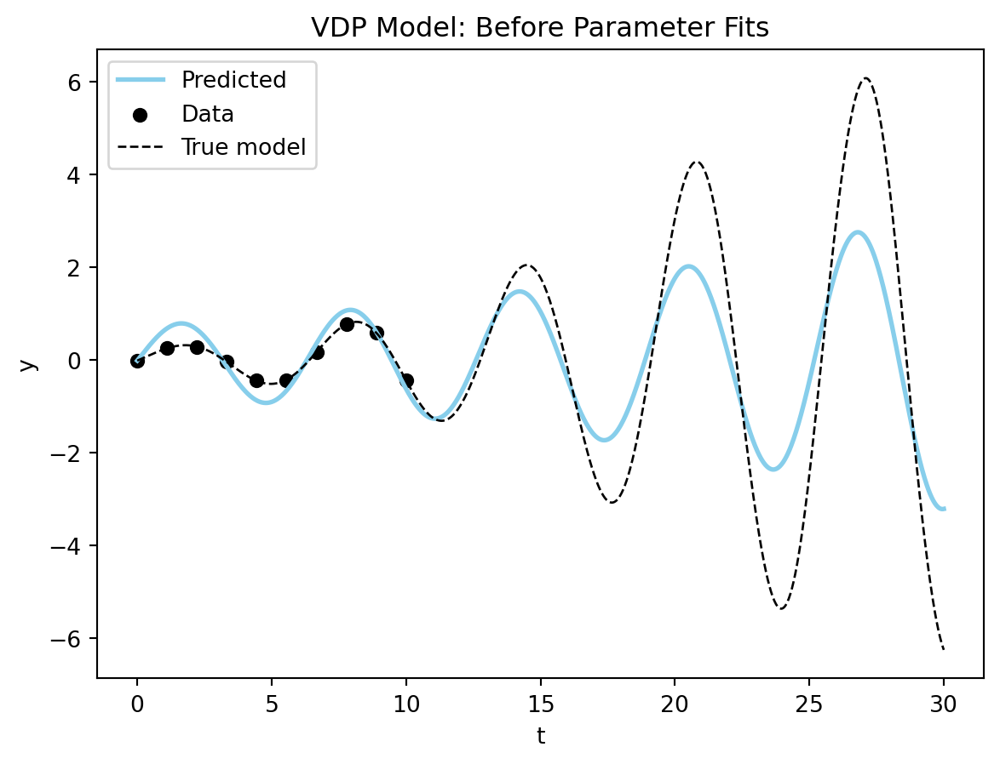
Now, we will use the training loop to fit the parameters of the VDP oscillator to the simulated data.
train(vdp_model, data_vdp, epochs=50, model_name="vdp");
print(f"After training: {vdp_model}, where the true value is {true_mu}")
print(f"Final Parameter Recovery Error: {vdp_model.mu - true_mu}")Loss at 0: 0.1756787821650505
Loss at 10: 0.008743234211578965
Loss at 20: 0.0012590152909979224
Loss at 30: 0.00026920452364720404
Loss at 40: 0.0002005345668294467
After training: mu: 0.3009839951992035, where the true value is 0.3
Final Parameter Recovery Error: 0.0009839832782745361Not to bad! Let’s see how the plot looks now…
plot_time_series(model_sim, vdp_model, data_vdp[0], dyn_var_idx=1, title = "VDP Model: Before Parameter Fits");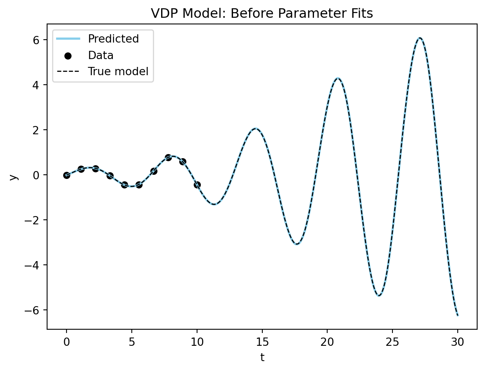
The plot confirms that we almost perfectly recovered the parameter. One more quick plot, where we plot the dynamics of the system in the phase plane (a parametric plot of the state variables).
plot_phase_plane(model_sim, vdp_model, data_vdp[0], title = "VDP Model: After Fitting");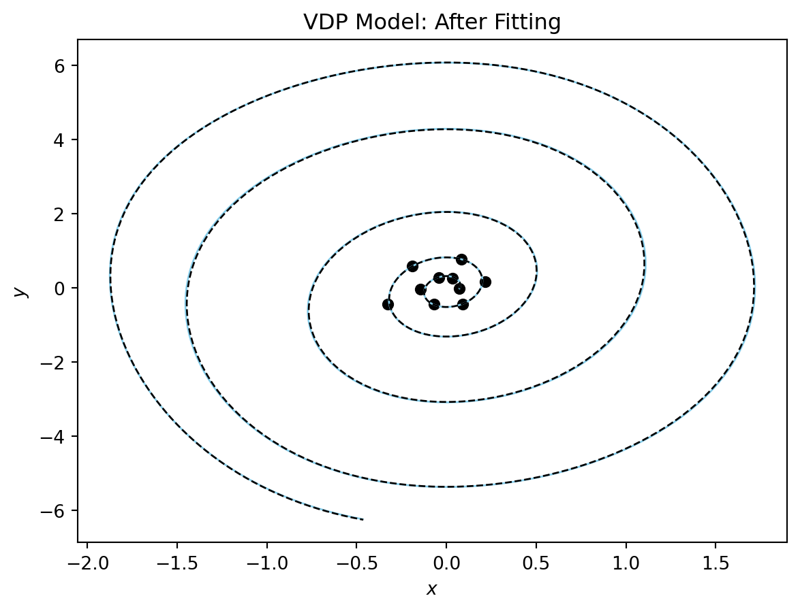
Figure 1 shows the results of the fit.
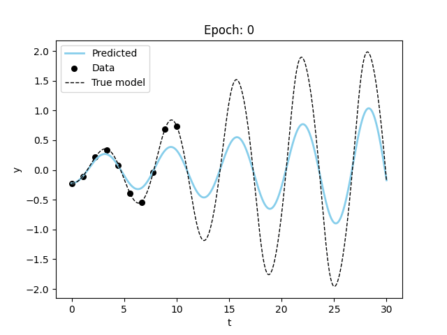
Now lets adapt our methods to fit simulated data from the Lotka Voltera equations.
model_sim_lv = LotkaVolterra(1.5,1.0,3.0,1.0)
ts_data = torch.arange(0.0, 10.0, 0.1)
data_lv = create_sim_dataset(model_sim_lv,
ts = ts_data,
num_samples=10,
sigma_noise=0.1,
initial_conditions_default=torch.tensor([2.5, 2.5]))model_lv = LotkaVolterra(alpha=1.6, beta=1.1,delta=2.7, gamma=1.2)
plot_time_series(model_sim_lv, model_lv, data = data_lv[0], title = "Lotka Volterra: Before Fitting");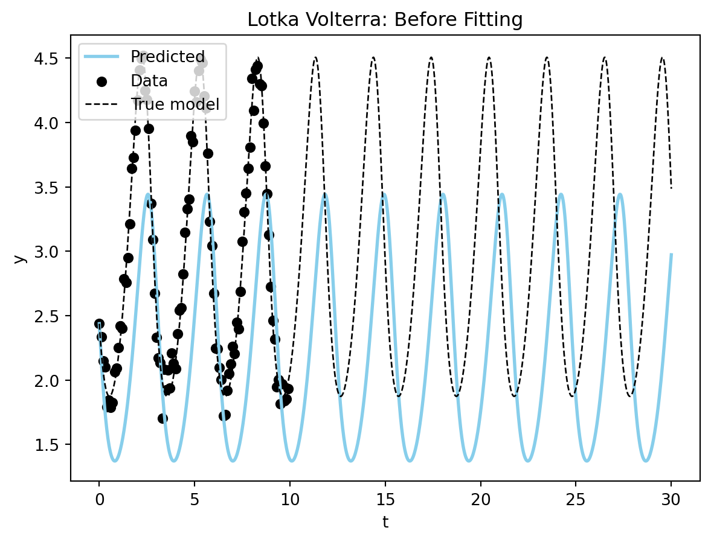
train(model_lv, data_lv, epochs=60, lr=1e-2, model_name="lotkavolterra")
print(f"Fitted model: {model_lv}")
print(f"True model: {model_sim_lv}")Loss at 0: 1.1350820064544678
Loss at 10: 0.1333734095096588
Loss at 20: 0.047438858076930046
Loss at 30: 0.02459188550710678
Loss at 40: 0.022399690933525562
Loss at 50: 0.02224074024707079
Fitted model: alpha: 1.5970245599746704, beta: 1.046509027481079, delta: 2.8160459995269775, gamma: 0.939906895160675
True model: alpha: 1.5, beta: 1.0, delta: 3.0, gamma: 1.0plot_time_series(model_sim_lv, model_lv, data = data_lv[0], title = "Lotka Volterra: After Fitting");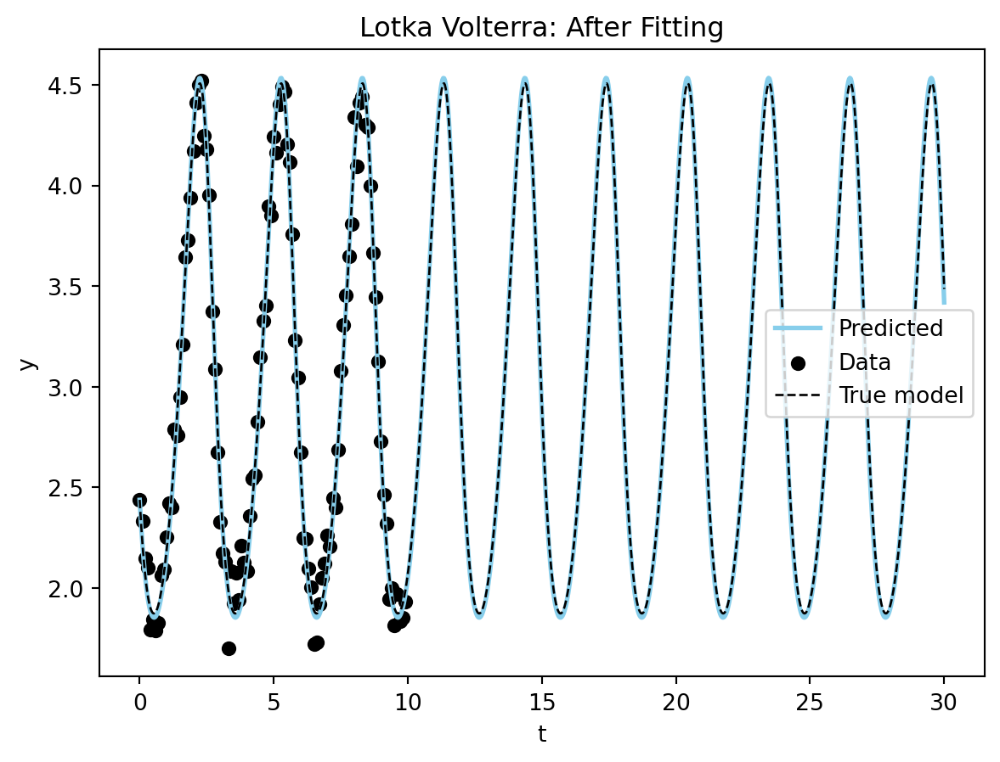
Now let’s visualize the results using a phase plane plot.
plot_phase_plane(model_sim_lv, model_lv, data_lv[0], title= "Phase Plane for Lotka Volterra: After Fitting");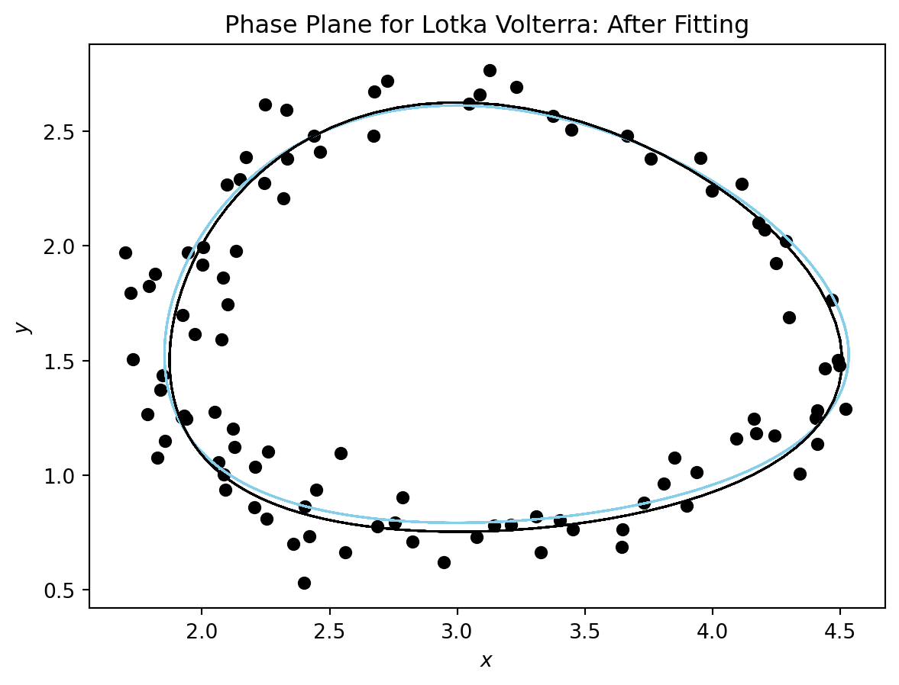
Figure 2 shows the results of the fit.
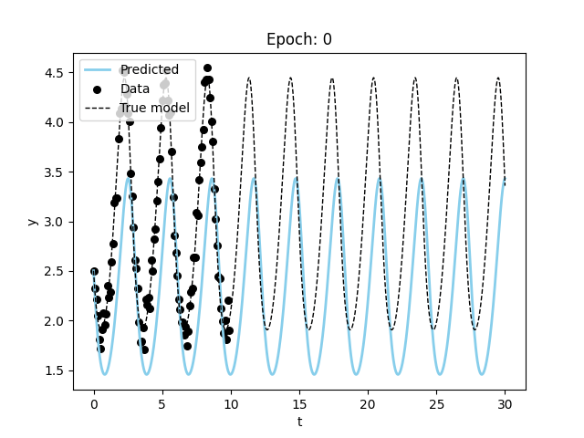
Finally, let’s try to fit the Lorenz equations.
model_sim_lorenz = Lorenz(sigma=10.0, rho=28.0, beta=8.0/3.0)
ts_data = torch.arange(0, 10.0, 0.05)
data_lorenz = create_sim_dataset(model_sim_lorenz,
ts = ts_data,
num_samples=30,
initial_conditions_default=torch.tensor([1.0, 0.0, 0.0]),
sigma_noise=0.01,
sigma_initial_conditions=0.10)lorenz_model = Lorenz(sigma=10.2, rho=28.2, beta=9.0/3)
fig, ax = plot_time_series(model_sim_lorenz, lorenz_model, data_lorenz[0], title="Lorenz Model: Before Fitting");
ax.set_xlim((2,15));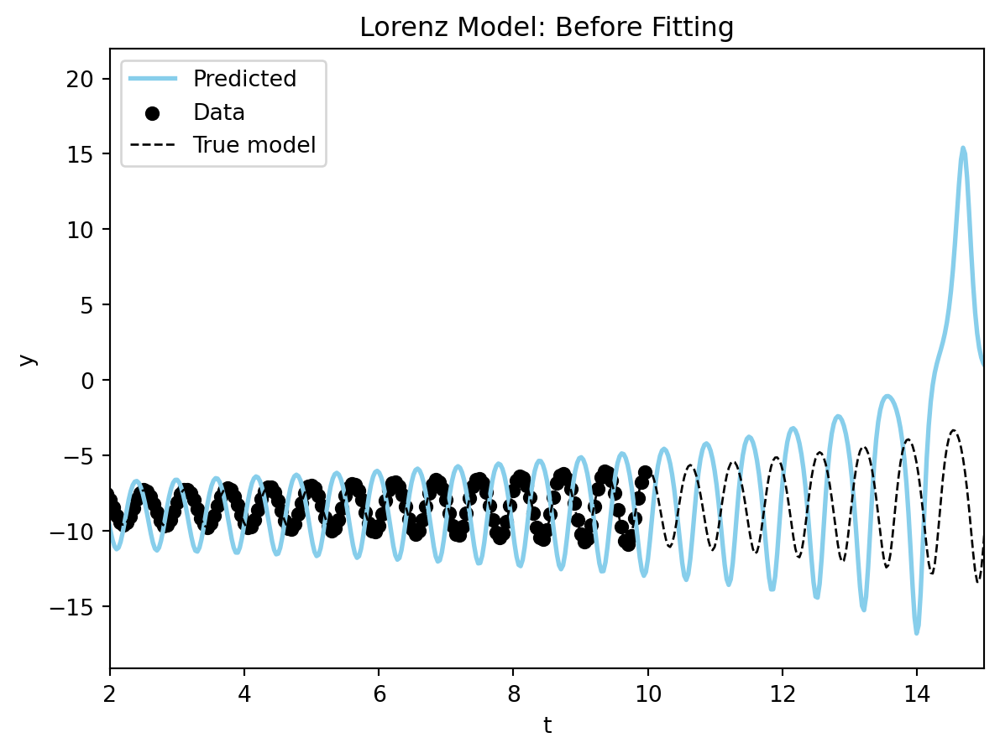
train(lorenz_model,
data_lorenz,
epochs=300,
batch_size=5,
method = 'rk4',
step_size=0.05,
show_every=50,
lr = 1e-3)Loss at 0: 112.87475204467773
Loss at 50: 4.314377665519714
Loss at 100: 2.0217812061309814
Loss at 150: 1.2296464890241623
Loss at 200: 0.768804207444191
Loss at 250: 0.5259109809994698Let’s look at the results from the fitting procedure. Starting with a full plot of the dynamics.
fig, ax = plot_time_series(model_sim_lorenz, lorenz_model, data_lorenz[0], title = "Lorenz Model: After Fitting"); 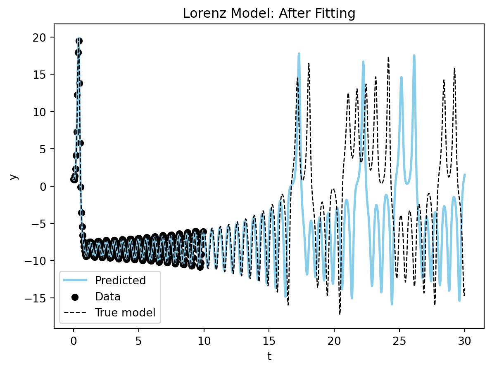
Let’s zoom in on the bulk of the data and see how the fit looks.
fig, ax = plot_time_series(model_sim_lorenz, lorenz_model, data_lorenz[0], title = "Lorenz Model: After Fitting");
ax.set_xlim((2,20));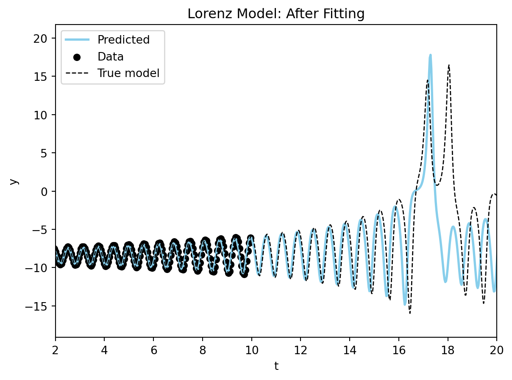
You can see the model is very close to the true model for the data range. Now the phase plane plot.
plot_phase_plane(model_sim_lorenz, lorenz_model, data_lorenz[0], title = "Lorenz Model: After Fitting", time_range=(0,20.0));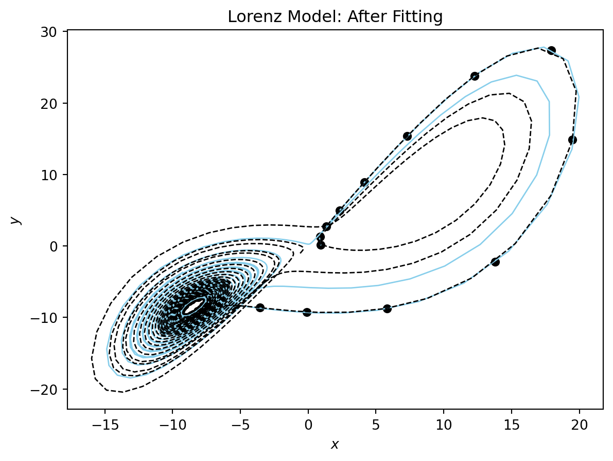
You can see that our fitted model performs well for t in [0,17] and then starts to diverge.
This is great for the situation where we know the form of the equations on the right-hand-side, but what if we don’t? Can we use this procedure to discover the model equations?
This is much too big of a subject to cover in this post (stay tuned), but one of the biggest advantages of moving our differential equations models into the torch framework is that we can mix and match them with artificial neural network layers.
The simplest thing we can do is to replace the right-hand-side f(y,t; \theta) with a neural network layer l_\theta(y,t). These types of equations have been called a neural differential equations and it can be viewed as generalization of a recurrent neural network (citation).
Let’s do this for the our simple VDP oscillator system.
Let’s remake the simulated data, you will notice that I am creating longer time-series of the data, and more samples. Fitting a neural differential equation takes much more data and more computational power since we have many more parameters that need to be determined.
# remake the data
model_sim_vdp = VDP(mu=0.20)
ts_data = torch.linspace(0.0,30.0,100) # longer time series than the custom ode layer
data_vdp = create_sim_dataset(model_sim_vdp,
ts = ts_data,
num_samples=30, # more samples than the custom ode layer
sigma_noise=0.1,
initial_conditions_default=torch.tensor([0.50,0.10]))class NeuralDiffEq(nn.Module):
"""
Basic Neural ODE model
"""
def __init__(self,
dim: int = 2, # dimension of the state vector
) -> None:
super().__init__()
self.ann = nn.Sequential(torch.nn.Linear(dim, 8),
torch.nn.LeakyReLU(),
torch.nn.Linear(8, 16),
torch.nn.LeakyReLU(),
torch.nn.Linear(16, 32),
torch.nn.LeakyReLU(),
torch.nn.Linear(32, dim))
def forward(self, t, state):
return self.ann(state)model_vdp_nde = NeuralDiffEq(dim=2)
plot_time_series(model_sim_vdp, model_vdp_nde, data_vdp[0], title = "Neural ODE: Before Fitting");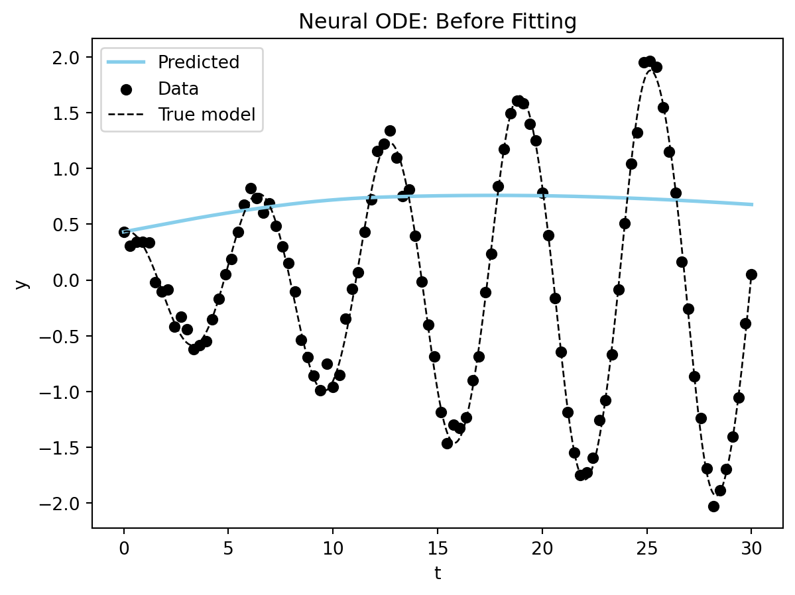
You can see we start very far away for the correct solution, but then again we are injecting much less information into our model. Let’s see if we can fit the model to get better results.
train(model_vdp_nde,
data_vdp,
epochs=1500,
lr=1e-3,
batch_size=5,
show_every=100,
model_name = "nde")Visualizing the results, we can see that the model is able to fit the data and even extrapolate to the future (although it is not as good or fast as the specified model). Figure 3 shows the results of the model fitting procedure.

These models take a long time to train and more data to converge on a good fit. This makes sense since we are both trying to learn the model and the parameters at the same time.
In this article I have demonstrated how we can use differential equation models within the pytorch ecosytem using the torchdiffeq package. The code from this article is available on github and can be opened directly to google colab for experimentation. You can also install the code from this article using pip (pip install paramfittorchdemo).
This post is an introduction in the future I will be writing more about the following topics:
Happy modeling!
@online{hannay2023,
author = {Hannay, Kevin},
title = {Differential {Equations} as a {Pytorch} {Neural} {Network}
{Layer}},
date = {2023-04-08},
url = {https://khannay.com/posts/pytorch-ode/ode.html},
langid = {en}
}